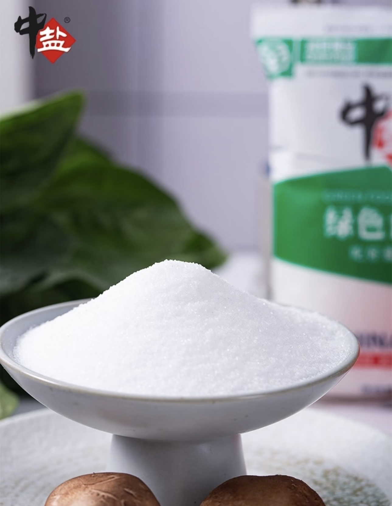
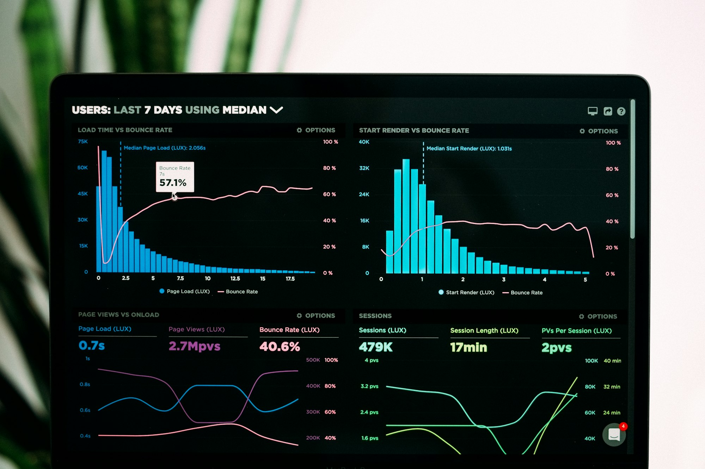
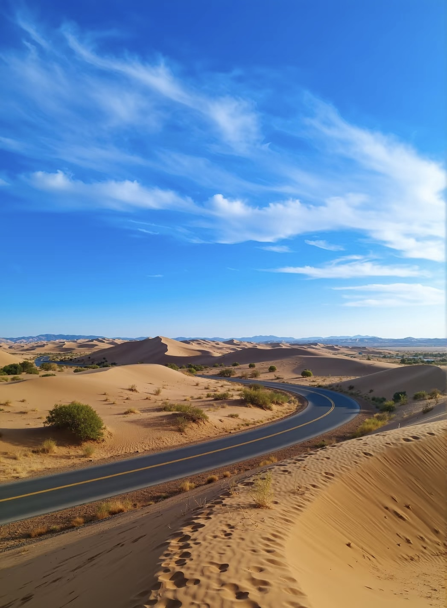

Portfolio
Brand Cases & Projects
品牌案例与项目
"从文化挖掘到数据驱动, 从传统国企到新消费赛道"

Case Study 01
中盐金坛
传统国企的文化品牌重塑
项目背景
中盐金坛面临问题：品牌认知度低、文化传承与现代营销脱节、产品体系复杂难以统一传播。
我的方案
1. 文化挖掘：产出《盐文化与贤文化》杂志。
2. ESG落地：践行E（绿色矿山）、S（食盐科普）、G（优化治理）维度。
3. 科技赋能：数字化生产体系。
4. 区域营销：打造江苏区域品牌建议。
+40%
杂志发行量
+35%
品牌文化认知度
20+
国家和地区销售
Case Study 02
上海添橙投资
快消赛道的数据驱动营销
项目背景
投资公司需要：快消/数字营销赛道的市场数据支撑、消费趋势深度分析、投资决策数据基础。
我的方案
1. 数据标准化：建立行业数据信息库。
2. 趋势分析：提炼消费趋势核心结论支撑投资决策。
3. 可视化呈现：将复杂数据转化为清晰报告。
10+
研究报告
全品类
快消数据库覆盖
高度认可
投资团队评价


Case Study 03
宁夏乡村生态旅游
地方品牌的破圈传播
项目背景
宁夏乡村文旅面临：知名度低、游客局限于本地、文化特色传播失效。
我的方案
1. 媒体对接：对接主流媒体与本土企业。
2. 内容创作：输出20+篇优质传播素材。
3. 市场调研：深入调研需求并提供建议。
优秀团队
"喜迎二十大"荣誉
×3
社交媒体曝光量
20+
宣传内容输出
Let's create the next success story together
让我们一起创造下一个成功故事
将哲学思维、市场洞察、数据分析、科技赋能融为一体。
EXPLORE MORE ➔